ENIAC's High-Speed Multiplier works by coordinating the action of from 4 to 6 of the accumulators.
In order for the Multiplier to work correctly it must be proplerly connected to these accumulators.
Here are the accumulators that the Multiplier needs to be connected to:
| Accumulator | Function |
|---|---|
| Multiplier | |
| Multiplicand | |
| Left Hand Partial Product I | |
| Left Hand Partial Product II (Used for 20 digit answers) | |
| Right Hand Partial Product I | |
| Right Hand Partial Product II (Used for 20 digit answers) |
In this tutorial you will learn all the connections that need to be made for setting up the
Multiplier unit.
We will start by setting up the Multiplier recieve pulses
| Start off by selecting the Multiplier tab | |
| Be sure that Panel 1 is selected | |
|
Turn the power On to this panel |
Set the R alpha through R epsilon outputs to P5-A:1 through P5-A:5
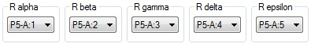
Now we need to connect these pulses to the multiplier accumulator (9).
 |
select the Acc tab |
| 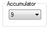 | Select accumulator 9 |
|
Turn the power On to this panel |
Set I1 through I4 to P5-A:1 through P5-A:4
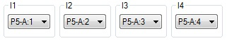
| 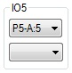 | Set the input of program 5 to P5-A:5 |
Set the program modes for programs 1 through 4 to alpha through delta
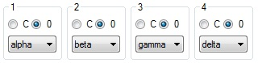
| 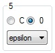 | Set the mode of program 5 to epsilon |
Next we need to connect the Multiplicand receiver pulses
| Switch back to the Multiplier tab |
Set the D alpha through D epsilon outputs to P5-A:6 through P5-A:10

|
select the Acc tab |
| 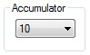 | Select accumulator 10 |
|
Turn the power On to this panel |
Set I1 through I4 to P5-A:6 through P5-A:9
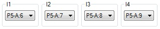
| 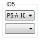 | Set the input of program 5 to P5-A:10 |
Set the program modes for programs 1 through 4 to alpha through delta
| Set the mode of program 5 to epsilon |
Next we need to setup the product disposal pulses:
| Switch back to the Multiplier tab | |
| Select Panel 3 |
Set the A through ASC outputs to P5-B:4 through P5-B:9
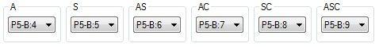
Now we need to set the final product accumulator (13) to receive these pulses
|
select the Acc tab |
| 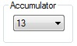 | Select accumulator 13 |
|
Turn the power On to this panel |
Set the inputs to programs 5 through 10 to P5-B:4 through P5-B:9
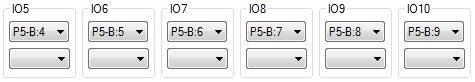
And configure programs 5 through 10 as shown below
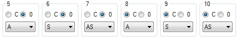
Next we to connect the pulses that are used during sign correction
| select the Multiplier tab | |
| 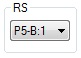 | Set the RS program output to P5-B:1 |
|
select the Acc tab |
| This connects to the multiplier accumulator, so select accumulator 9 | |
| 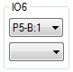 | Connect the input for program 6 to P5-B:1 |
| 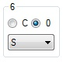 | Configure program 6 to mode S and set the Clear/Correct switch to 0 |
| 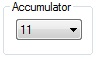 | LHPP I receives this value, so select accumulator 11 |
|
Turn On the power to this accumulator |
| 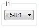 | Set the input of program 1 to P5-B:1 |
| 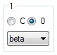 | Configure program 1 to mode beta and set the Clear/Correct switch to 0 |
| Switch back to the Multiplier tab | |
| 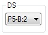 | Set the DS program output to P5-B:2 |
|
select the Acc tab |
| This connects to the multiplicand accumulator, so select accumulator 10 | |
| 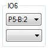 | Connect the input for program 6 to P5-B:2 |
| Configure program 6 to mode S and set the Clear/Correct switch to 0 | |
| RHPP I receives this value, so select accumulator 13 | |
| 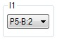 | Set the input of program 1 to P5-B:2 |
| Configure program 1 to mode beta and set the Clear/Correct switch to 0 |
The last program pulse we need to setup is the pulse used to combine the left and right partial
products into the final product
| select the Multiplier tab | |
| 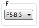 | Set the F program output to P5-B:3 |
|
select the Acc tab |
| LHPP will be sending its value, so select accumulator 11 | |
| 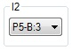 | Set the program input for program 2 to P5-B:3 |
| 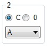 | Configure program 2 to use mode A and set the Clear/Correct switch to C |
| RHPP will be receiving this value, so select accumulator 13 | |
| Set the program input for program 2 to P5-B:3 | |
| 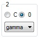 | Configure program 2 to use mode gamma and set the Clear/Correct switch to 0 |
This takes care of all the program pulse connections. Now we need to connect all the digit paths
| select the Multiplier tab | |
| 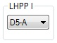 | Set the LHPP I digit output to D5-A |
| 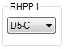 | Set the RHPP I digit output to D5-C |
|
Now we will work on the accumulators, select the Acc tab |
| Start by selecting accumulator 9 | |
| 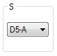 | Set the S digit output port to D5-A |
| Next will be accumulator 10 | |
| 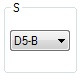 | Set the S digit output port to D5-B |
| Next will be accumulator 11 | |
 |
Set the alpha digit input port to D5-A |
| 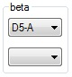 | Set the beta digit input port to D5-A |
| 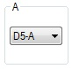 | Set the A digit output port to D5-A |
| And finally accumulator 13 | |
 |
Set the alpha digit input port to D5-C |
| 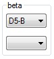 | Set the beta digit input port to D5-B |
| 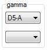 | Set the gamma digit input port to D5-A |
At this point the High-Speed Multiplier is setup to produce 10 digit products. In order to produce
20 digit products, some additional steps are required
| select the Multiplier tab | |
| 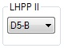 | Set the LHPP II digit output to D5-B |
| 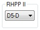 | Set the RHPP II digit output to D5-D |
|
Now we will work on the accumulators, select the Acc tab |
| Start by selecting accumulator 11 | |
| 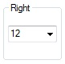 | Set the right accumulator association to 12 |
| 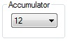 | Select accumulator 12 |
|
Turn the power On to this accumulator |
| 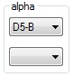 | Set the alpha digit input port to D5-B |
| 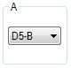 | Set the A digit output port to D5-B |
| Select accumulator 13 | |
| 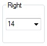 | Set the right accumulator association to 14 |
| 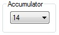 | Select accumulator 14 |
|
Turn the power On to this accumulator |
| 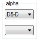 | Set the alpha digit input port to D5-D |
| 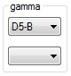 | Set the gamma digit input port to D5-B |
Now the High-Speed Multiplier is fully configured for producing up to 20 digit products.
Considering how much work it is to setup the Multiplier, it is probably a good idea to save your
setup so that you can use it as a starting point for setups that will use the Multiplier.
In the next tutorial we will look at how to acutally use the Multiplier to multiply numbers.